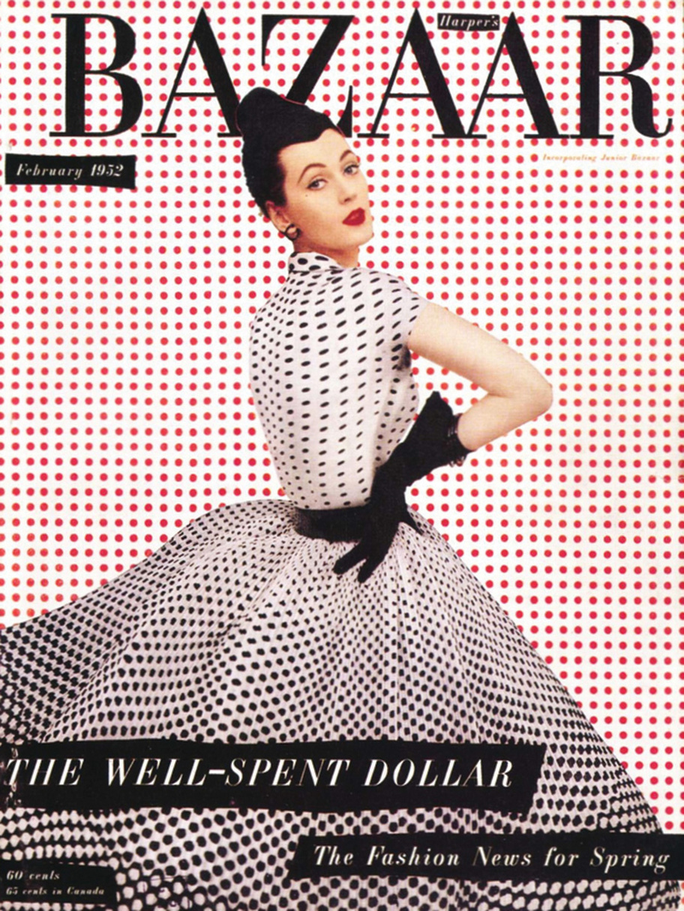
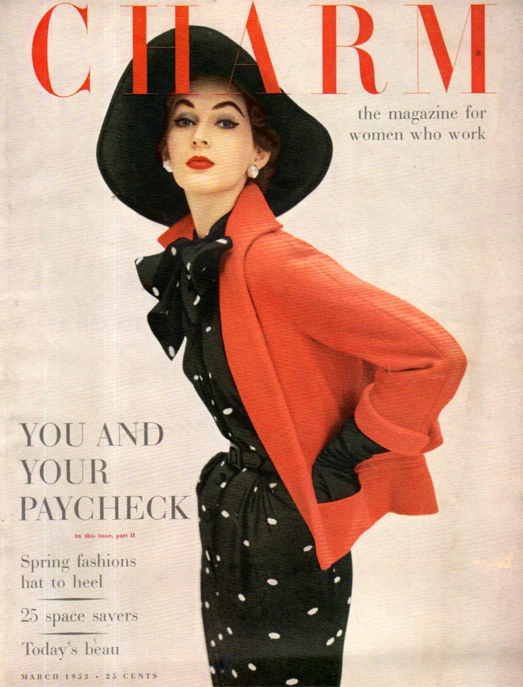
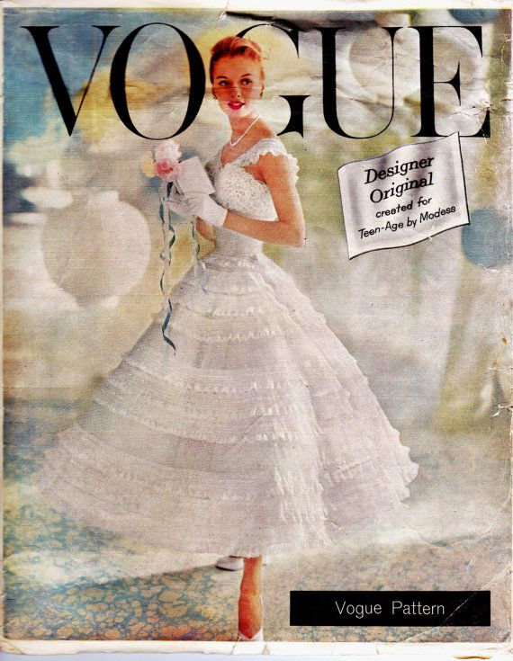

The 1950's - An Era
The 1950s was one of the most important decades in this aspect of history. The 1950s is a decade that many know for its problems in limiting women to the kitchen and the home, but this was also the time when women started expressing themselves through fashion.